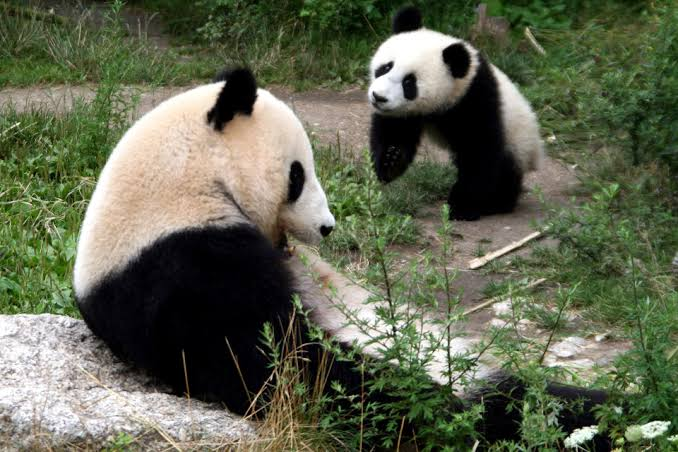
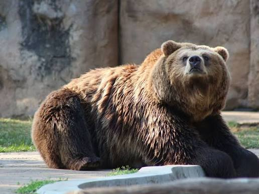
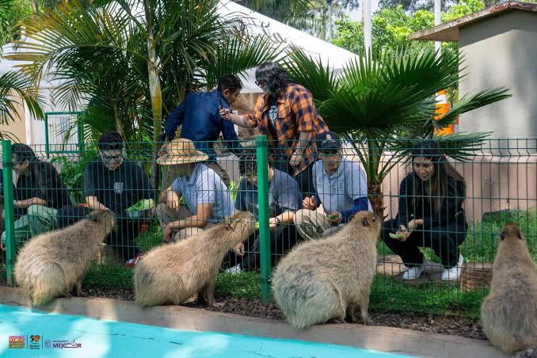

La vida evolusiona



El zoologico tiene la diversión para tu familia. uidar, conservar y educar es nuestra misión; maravillarte es nuestro deseo. Observa con respeto, escucha a la naturaleza y ayúdanos a preservar las especies para las futuras generaciones. Ponte tus zapatos más cómodos y abre bien los ojos y los oídos: aquí rugen los leones, cantan las aves y saltan los monos. Recuerda que venimos a visitar la casa de nuestros amigos animales, así que los tratamos con mucho amor, respeto y silencio cuando lo necesiten. ¡Acompáñanos a esta gran aventura!